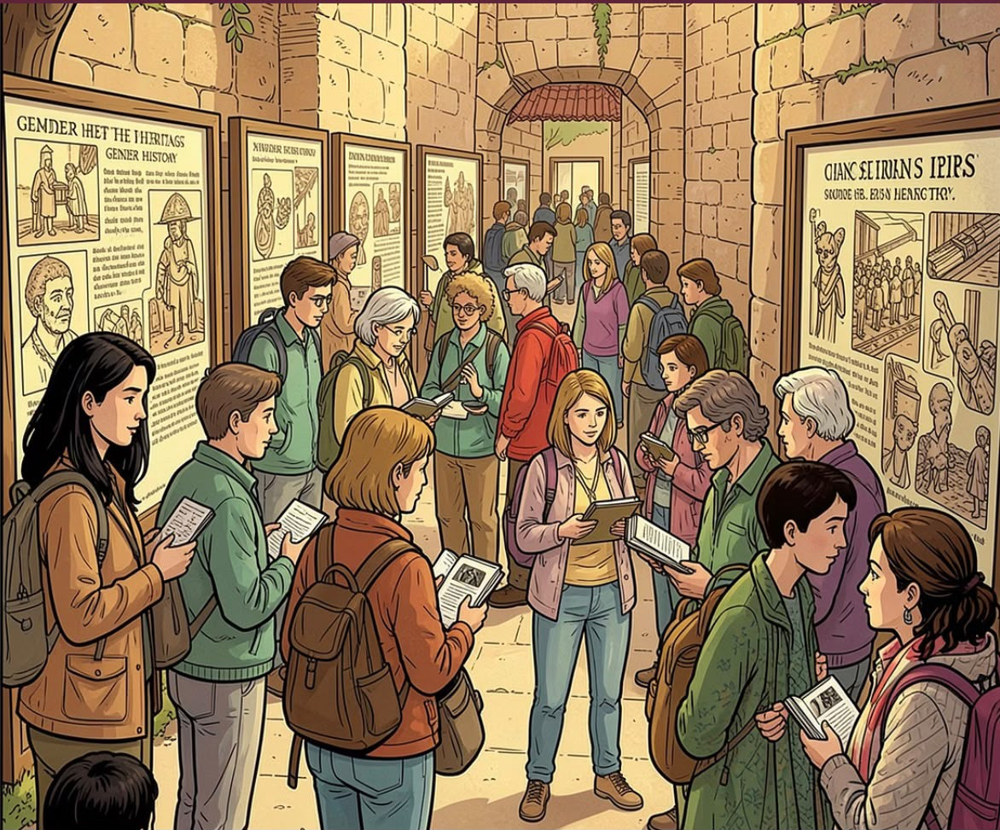
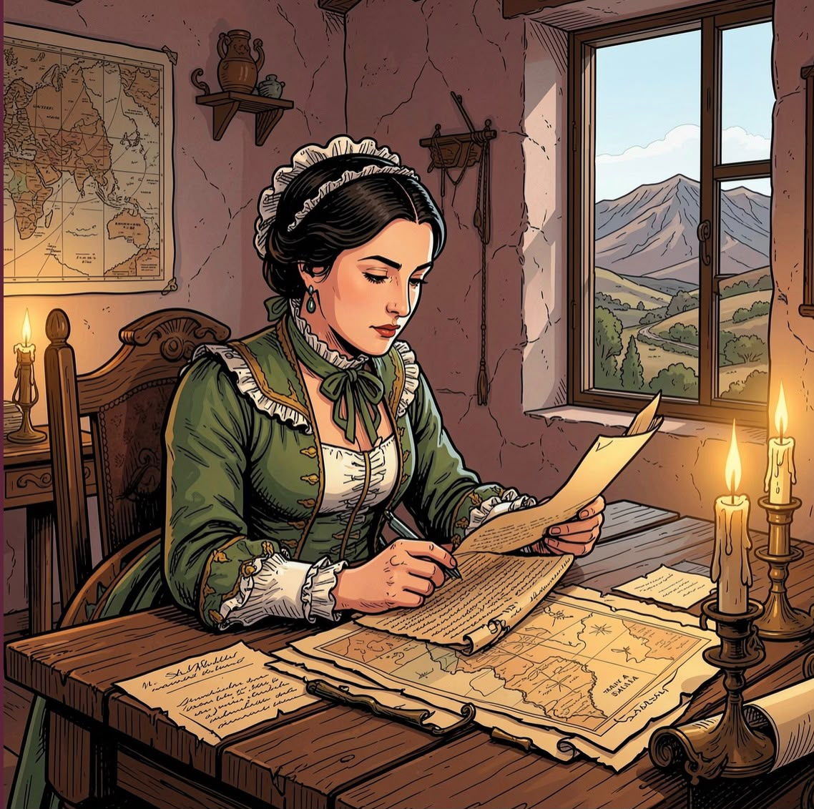
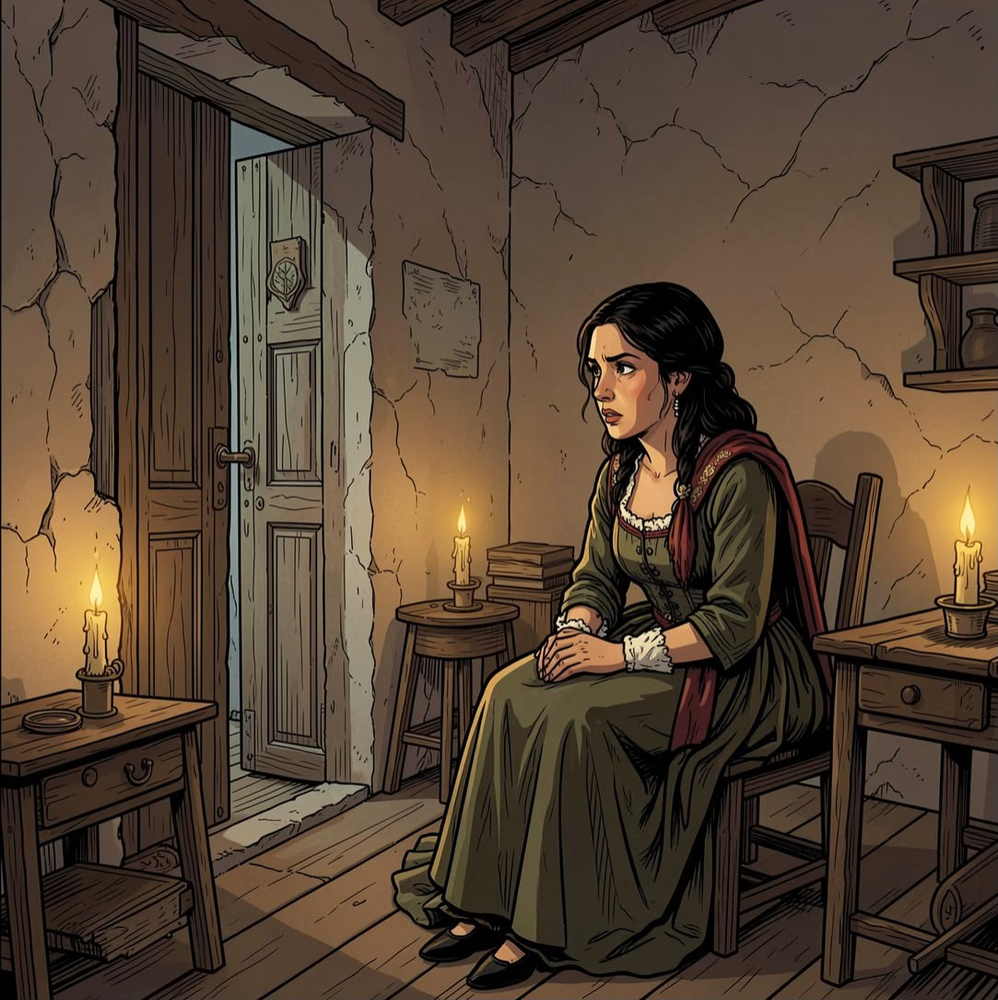
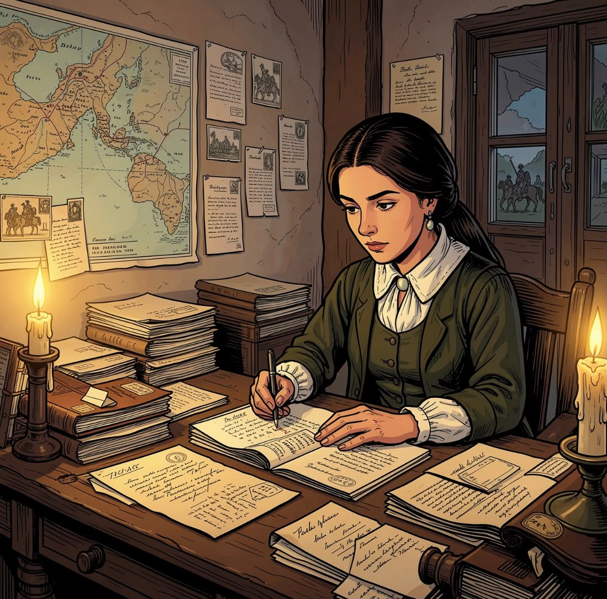
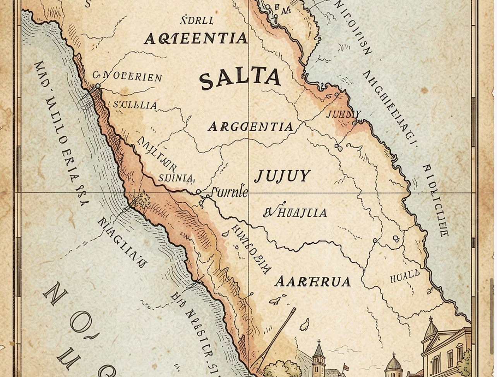
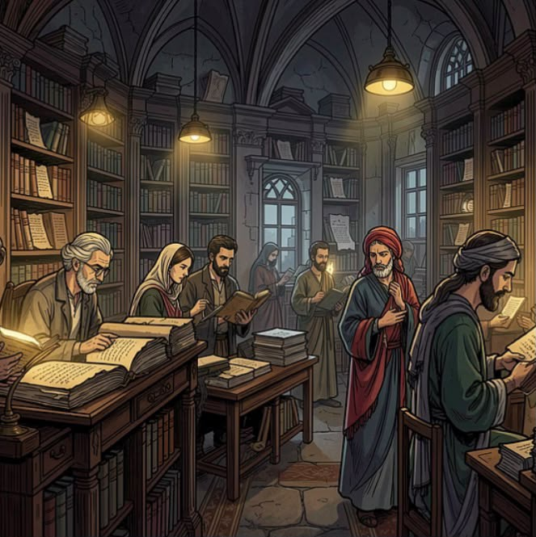
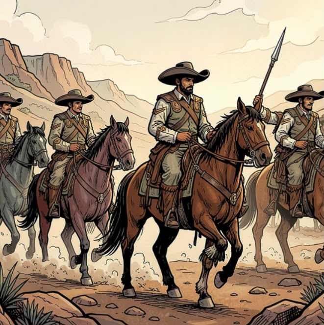
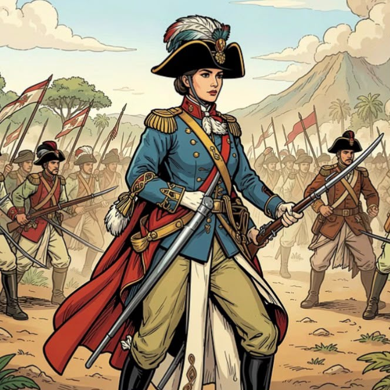
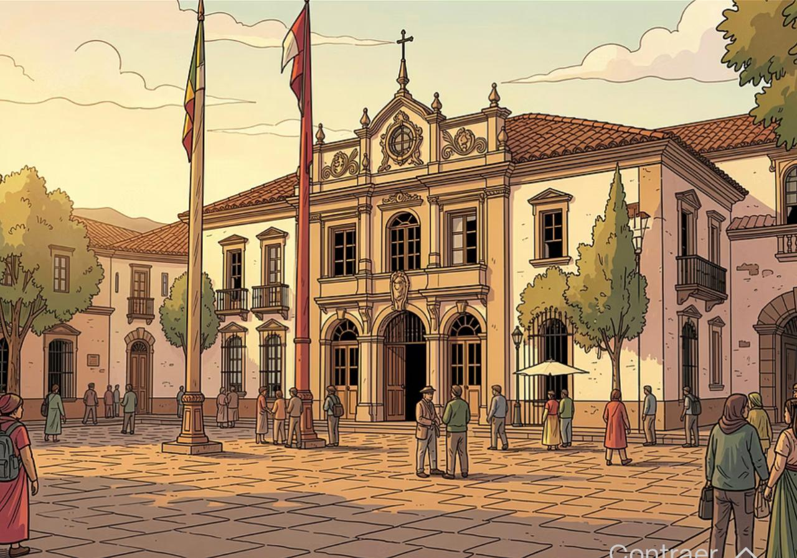

Recorrido cultural e histórico del gauchaje salteño
Recorrido de Memoria y Circuito Cultural
Este recorrido de memoria invita a seguir las huellas históricas de las mujeres de Güemes, recuperando su presencia en los espacios y relatos que formaron parte de la construcción de nuestra historia.
También funciona como un circuito cultural que revela historias antes silenciadas, poniendo en valor las contribuciones, saberes y decisiones de estas mujeres en un contexto clave para la región.
A través de esta propuesta, se descubre lo que durante mucho tiempo permaneció desconocido sobre las mujeres de Güemes y su papel crucial en la guerra de independencia, resaltando su compromiso, su fuerza y su legado.
Público objetivo

Turistas nacionales e internacionales (15-50 años), Contenido destinado a un publico interesado por nuevos tipos de historia. Instituciones educativas y colectivos de géneros.
Legado e historia viva

Magdalena "Macacha" Güemes
Hermana del héroe gaucho y cerebro político. Coordinó la red de espionaje integral y contuvo a los sectores más vulnerables de Salta.

Juana Moro de Lopez
Apodada "La Emparedada" por sobrevivir al encierro en su propia casa tras descubrirse su labor patriótica.

María Loreto Sánchez Peón
Jefa del correo de la guerra gaucha, controlaba los registros de ingresos de las fuerzas imperiales en la ciudad.
El Coraje Silencioso: Las Mujeres de Güemes en la Guerra Gaucha
Las "Mujeres de Güemes" fueron pilares fundamentales
Las "Mujeres de Güemes" fueron pilares fundamentales en la lucha por la independencia. Desde Salta, tejieron una red de apoyo y resistencia que desestabilizó al enemigo y mantuvo viva la causa patriota, demostrando una valentía y astucia excepcionales.
Estrategas del Espionaje
Organizaron una eficiente red de inteligencia, interceptando comunicaciones y revelando movimientos de las tropas realistas. Su astucia fue clave para planificar emboscadas.
Soporte Logístico y Comunicación
Gestionaron el suministro de alimentos, medicinas y armas. Además, actuaron como mensajeras vitales, asegurando la comunicación entre los frentes y el general Güemes.
Resistencia y Refugio
Ofrecieron refugio y atención a soldados heridos o perseguidos. Su firmeza moral inspiró a la población y mantuvo el espíritu de lucha frente a la opresión realista.
Nodo Territorial: Geografía de la Guerra Gaucha

La Guerra Gaucha se desarrolló principalmente en Salta y Jujuy, junto con zonas vecinas del noroeste rioplatense. Estos territorios eran estratégicos porque funcionaban como corredor de paso hacia el Alto Perú y como frontera clave para frenar el avance realista.
La geografía serrana, los valles, los caminos angostos y la distancia entre poblados favorecieron la resistencia gaucha: permitieron emboscadas, desplazamientos rápidos y redes de apoyo local. En ese mismo territorio, las mujeres cumplieron un rol decisivo como comunicadoras, colaboradoras y organizadoras del sostén logístico e informativo de la resistencia.
Cronología de la Guerra Gaucha y las Mujeres de Güemes
1810: Revolución de Mayo
Comienza la gesta independentista. Nacimiento de los primeros correos y conspiraciones locales.
1814: Güemes asume el mando
Se organiza la red de bomberas, desarrollo del trabajo de espionaje y estrategia
1815-1817: Tensión de la guerra gaucha
Se organiza la red de bomberas, desarrollo del trabajo de espionaje y estrategia
1821: Fin de una Gesta
Caída en combate del Gral. Martín Miguel de Güemes y rol de Macacha Güemes después de su fallecimiento.
Triangulación de Fuentes: Fundamentos Historiográficos

Burke, Peter (2000): Formas de hacer historia
Introduce la "historia desde abajo" y el análisis de las representaciones culturales frente a la historia oficial de las élites.

Mata, Sara (2006): Los gauchos de Güemes
Explica la movilización popular y cómo los sectores subalternos se politizan en el proceso revolucionario.

Wexler, Berta (2002): Juana Azurduy y las mujeres en la revolución Altoperuana
Demuestra que las mujeres ejercían un pensamiento estratégico-militar y no un mero rol de acompañamiento pasivo.
Perspectiva del Gestor de Turismo Cultural
Desde una perspectiva de gestión turística fundamentada en la historiografía crítica contemporánea, este circuito de memoria constituye una intervención epistemológica que trasciende la narrativa hegemónica tradicional. La triangulación de fuentes permite deconstruir la invisibilización historiográfica de los actores subalternos, particularmente las mujeres de Güemes, cuya agencia política y capacidad estratégica han sido sistemáticamente marginalizadas en los relatos oficiales.
La propuesta se inscribe en la corriente de la 'historia desde abajo' (Burke, 2000), recuperando las representaciones culturales y prácticas cotidianas como fuentes válidas de conocimiento histórico. Asimismo, reconoce la politización de los sectores populares (Mata, 2006) como motor de transformación social, evidenciando cómo la movilización gaucha no fue un fenómeno espontáneo sino resultado de una organización compleja en la que las mujeres ejercieron pensamiento estratégico-militar (Wexler, 2002).
Este circuito turístico-cultural, por tanto, funciona como dispositivo de restitución memorial y como herramienta pedagógica que democratiza el acceso al conocimiento histórico, permitiendo que visitantes y comunidades locales se apropien de narrativas alternativas que visibilizan la multiplicidad de actores y perspectivas en la construcción de la historia regional.
Circuito Inmersivo: Recorrido por la Memoria de las Mujeres de Güemes
Este circuito propone una visita inmersiva por el centro histórico de Salta, siguiendo huellas materiales y simbólicas vinculadas a las mujeres de Güemes. A través de sus casas, espacios de reclusión y puntos de cierre del recorrido, el visitante reconstruye trayectorias de participación política, redes de apoyo, resistencias cotidianas y formas de agencia femenina que fueron decisivas en el proceso revolucionario del Noroeste
Punto A: Casa de Macacha Güemes
Ubicación: Museo de Güemes, España 730
En este primer punto se recupera la figura de Macacha Güemes como articuladora política y mediadora dentro de las redes de apoyo al proyecto revolucionario. La visita permite reconocer el valor histórico de la vivienda y comprender cómo la casa funcionó como espacio de sociabilidad, información y acción estratégica. El recorrido destaca los vínculos entre memoria familiar, liderazgo femenino y construcción de legitimidad política en tiempos de guerra.
Punto B: Casa de Juana Moro
Ubicación: España 782
Este sitio remite a Juana Moro, cuya participación en la causa patriota expresa la dimensión concreta y arriesgada del compromiso femenino. Su casa permite contextualizar acciones de colaboración, circulación de información y sostén logístico en un escenario de vigilancia y persecución. También recuerda el lugar donde fue “empedrada”, hecho que evidencia la violencia ejercida sobre las mujeres que se involucraron activamente en la causa y la necesidad de leer estos episodios desde una perspectiva historiográfica crítica.
Punto C: Casa de María Andrea Zenarruza
Ubicación: España 780
La casa de María Andrea Zenarruza permite ampliar la mirada sobre los lazos entre vida doméstica, redes familiares y política revolucionaria. Su historia se vincula con la de su esposo, el Coronel Francisco Pérez de Uriondo, mostrando cómo las alianzas matrimoniales también formaron parte de los entramados de poder y resistencia. Este punto invita a observar la espacialidad de la memoria y a identificar cómo los hogares fueron también ámbitos de decisión, protección y circulación de ideas.
Punto Final: Cabildo Histórico de Salta

Ubicación: Caseros 549
El recorrido concluye en el Cabildo Histórico de Salta, espacio que permite reflexionar sobre los procesos vinculados a las “bomberas” y otras formas de participación femenina en la vida política y militar de la ciudad. Aquí se resignifica la presencia de las mujeres no como figuras marginales, sino como actoras fundamentales en la defensa, la información y el sostenimiento de la causa patriota. El cierre invita a una lectura de largo plazo sobre su legado, subrayando que la memoria histórica se construye también desde los espacios donde esas acciones quedaron inscriptas.